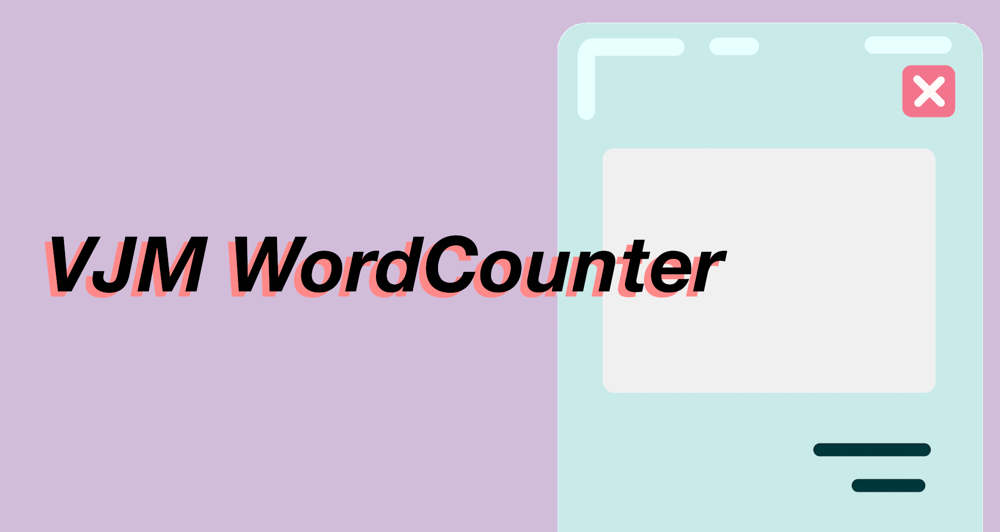
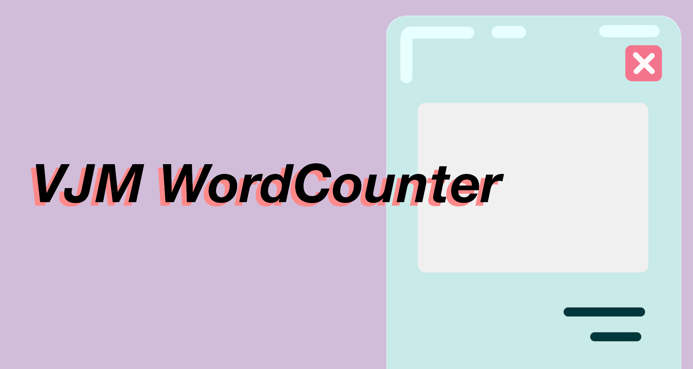
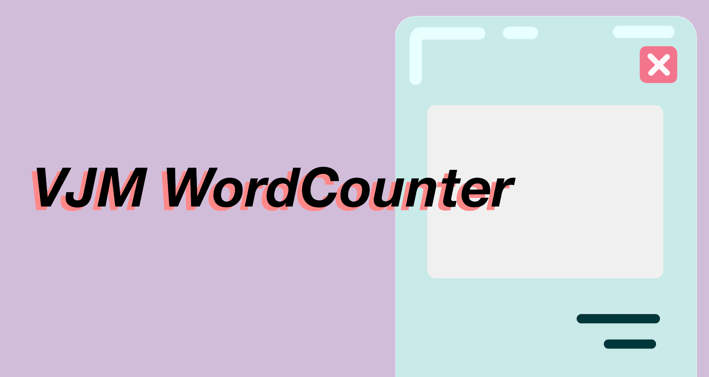

This page is a collection of all of my projects including papers, programs, art, and more. Most programs are available for download under the download tab, and their documentation can be found here.
Use the search bar above to browse projects by category or find a specific title.
